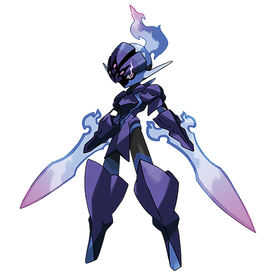

セリュレッジの弱点（2倍）
みず じめん いわ ゴースト あく
#937 · ほのお / ゴースト · ひのけんポケモン · 第9世代
セリュレッジはカルボウの分岐の剣の部分です。タイプはほのおとゴーストで、攻撃力は125、ダメージを回復に変える専用技を持っています。このタイプは、重要な2つの無効を持ち、5つの弱点があるため、慎重に配置する必要があるポケモンです。

BST 525
特性：もらいび、くだけるよろい（隠れ特性） · 進化段階：最終 · 表示されているステータス：基本形
ほのおとゴーストは珍しい組み合わせで、2つの完全な無効を得ることができます：ノーマルとかくとうは何も効きません。その代わりに、5つの弱点があり、ダメージは2倍になります。すべての数値は18の攻撃タイプを通じて計算されました。 タイプ相性表 同じグリッドでクロスチェックしています。
みず じめん いわ ゴースト あく
ほのお くさ こおり どく はがね フェアリー
ノーマル かくとう
ゲンガーはこのポケモン図鑑の他のゴーストタイプで、リザードンはほのおのスロットをカバーし、グレンアルマはカルボウのもう一方の部分です。
ひのけんポケモン
カルボウは小さなほのおタイプで、使用するアイテムによって全く異なる二つのポケモンのいずれかに進化します。あくのよろいはソウブレイズを生み出し、めいきのよろいはグレンアルマを生み出します。この選択は一度行うと永久的です。
この分岐は見た目だけではありません。ソウブレイズは物理型で攻撃125、ゴーストタイプです。グレンアルマは特殊型で特殊攻撃125、エスパータイプです。合計525で、使用方法は正反対で、決定を覆す方法はありません。
ほのおとゴーストはゲーム内で最も珍しい組み合わせの一つで、チームがこれを使用する理由は攻撃面ではなく防御面にあります。ノーマル技はゴーストタイプに当たらず、かくとう技も当たらないため、ゲーム内で最も一般的な物理攻撃タイプの二つは何もできません。
そのコストは現実的です: みず、じめん、いわ、ゴースト、あくはすべて二倍のダメージを与えます。75 HPと80 防御を持つポケモンに五つの弱点があるため、中立の攻撃も受けたくありませんし、ましてや効果抜群の攻撃は受けたくありません。
むねんのつるぎはソウブレイズの専用技で、与えたダメージの半分を回復する物理のほのお技です。攻撃125のポケモンにとって、これは毎ターン勝つトレードに変換され、非常に壊れやすいものにしては珍しいです。
回復は弱い技に付随するギミックではありません。それは攻撃125のタイプ一致技ほのお技であり、ソウブレイズを生かす技でもあり、相手のポケモンを倒す技でもあります。
くだけるよろいは、ポケモンが物理技を受けるたびに防御を1段階下げ、素早さを2段階上げます。第8世代からは1段階ではなく2段階になり、二回の物理攻撃が素早さを倍増させます。
これは85の素早さと125の攻撃を持つポケモンにとって正に望ましいことです。また、防御の低下はダメージと重なるため、死にやすくなります。ソウブレイズは一発受けた後に掃除するか、試みて倒れるかのどちらかが頻繁に起こります。
75 HP、125 攻撃、80 防御、60 特殊攻撃、100 特殊防御、85 素早さです。数字からデザインは明確です: すべてが攻撃に振り分けられ、特殊防御は100で驚きのステータスであり、特殊攻撃は60で意図的に放棄されています。
その広がりは、ソウブレイズが正確に1つの役割を持ち、それ以外のことを装わないことを意味します。これは物理的なブレイカーで、回復するタイプ一致技を持ち、特殊アタッカーを必要とするチームには必要ありません。
水、地面、または岩の技を持つポケモンは、素早くソウブレイズを排除します。また、あくやゴーストの技もそのタイプによって同様に効果があります。むねんのつるぎを受けて中立的な攻撃で反撃できる物理的に耐久のあるポケモンも有効です。なぜなら、回復は与えたダメージに比例するからです。
対策は十分に明確で、優れたプレイヤーはそれに備えます：ほのおに耐性のあるポケモンを交代させ、くだけるよろいのトレードを強制し、下がった防御に攻撃します。ソウブレイズは、相手がそれをできない試合に勝ちます。
どちらも合計525で、どちらももらいびを持ち、隠れた選択肢としてくだけるよろいがあります。違いは、どのステータスが125を得たかです：ソウブレイズは物理的で、グレンアルマは特殊的なので、2つはチームで反対の役割を果たします。
ソウブレイズは一般的に構築しやすいポケモンです。なぜなら、回復する物理的なほのおアタッカーは珍しく、ゴーストタイプは免疫を追加するからです。グレンアルマは、チームがすでに物理的なアタッカーを持ち、特殊なブレイカーが必要な場合により良い選択です。
カルボウはパルデア地方で見つかり、必要な鎧はお金ではなくトレードで購入されます。サバンナを抜けた先のまちでは、NPCがあくのよろいのために10個のヤバチャのカップのかけらを、めいきのよろいのために10個のブロンズバッジを取ります。
つまり、進化はレベルではなくスカベンジャーハントによって制限されています。これが、2つの形がバージョンによって異なる理由でもあります：バイオレットはソウブレイズの鎧に傾き、スカーレットはグレンアルマの方に傾きます。
+0の時、ソウブレイズは回復する良いブレイカーです。+2の時、チームの2、3体を連続で排除するポケモンになります。なぜなら、125の攻撃力が倍になれば、ほぼすべての中立的な対象を一撃で排除し、むねんのつるぎで到達するために受けたダメージを回復するからです。
問題は、そのターンのコストです。75のHPと80の防御を持つポケモンでつるぎのまいをすることは、何かをする前に攻撃を受けることを意味し、5つの弱点はその攻撃がしばしば倍増することを意味します。くだけるよろいはスピードを上げることで部分的にそのコストを補いますので、効果的なシーケンスは：1回の物理的な攻撃を受け、ブーストし、その後の試合で先に動くことです。
そのシーケンスが、ソウブレイズのセットが耐久性ではなく、正確に1ターン生き残ることを中心に構築される理由です。フォーカスレンズ、交代するための耐久のある仲間、または交代によって生まれるフリーターンは、同じことを買う方法です。
シャイニー版のカルボウは一つのことを変え、それをうまく変えます。鎧は同じ濃紺で、刃の形も同じですが、唯一の違いは色です: 頭の炎と剣の光がピンク紫から青に変わります。
それは聞こえるよりも重要です。なぜなら、炎はバトルアニメーションのシルエットで最も目立つ部分だからです。ダブルバトルや混雑したレイドでは、青い冠が目印であり、体ではありません。
変わらないのは、ポケモンを機能させるすべての要素です。合計525、攻撃125、隠れ特性はくだけるよろい、むねんのつるぎで半分のダメージを回復します。シャイニーは同じガラスキャノンに塗装されたコートです。
よくある質問
ほのおとゴースト。これによりノーマルとかくとうに対する免疫が得られ、ダメージが2倍になる弱点が5つあります。
みず、じめん、いわ、ゴースト、あくがそれぞれダメージ2倍を与えます。ほのお、くさ、こおり、どく、むし、はがね、フェアリーは半減します。
カルボウはあくのよろいを使うことでソウブレイズに進化します。別の道であるめいきのよろいを使うとグレンアルマになります。
通常はもらいび、隠れ特性はくだけるよろいです。競技用のセットではほぼ常にくだけるよろいがスピードブーストのために求められます。
525です。こうげきは125、特防は100、特攻は60で、ポケモンの役割が明確に示されています。
物理的なほのおの攻撃で、与えたダメージの半分をソウブレイズのHPとして回復します。これがタイプ一致技であり回復でもあるため、ポケモンが機能します。
物理攻撃を受けると防御が1段階下がり、スピードが2段階上がります。これは第8世代からの仕様です。重複する攻撃でさらに加速します。
チームによります。ソウブレイズは回復するタイプ一致技を持つ物理アタッカーで、グレンアルマはエスパータイプの特殊アタッカーです。両者の合計は525です。
パルデアにて。よろいはサバンナを抜けた先のまちで、ヤバチャのカップのかけら10個と引き換えにあくのよろい、またはブロンズバードのかけら10個と引き換えにめいきのよろいを入手できます。
むねんのつるぎ、シャドークロー、つるぎのまい、そして通常はインファイトのようなカバレッジ技です。最初の2つはタイプ一致技技で、つるぎのまいは125の攻撃力を掃討に変えます。
それは、主にむねんのつるぎのおかげで取引が難しいため、合法なティアでは堅実な物理ブレイカーです。水、地面、岩に対する脆さが限界です。
はい。鎧は濃紺のままですが、頭の炎がピンク紫から青に変わり、両方の刃に沿った光もそれに合わせて変わります。カードのすべては同じままです: 合計525は同じ、くだけるよろいも同じ、むねんのつるぎも同じです。
カルボウexはサージングスパークス36/191、ダブルレアです。同じセットのイラストレアは197/191で、カード番号検索のほとんどの背後にある番号です。また、パルデアの運命にはシャイニーレアが162/91で存在します。